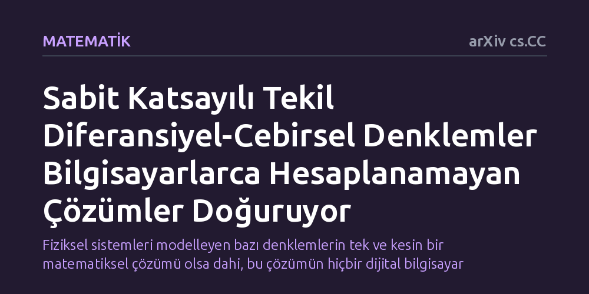

MATEMATIK · arXiv cs.CC · 2026-10-22
Araştırmacılar, tekil doğrusal diferansiyel-cebirsel denklemlerin çözümlerinin bilgisayarlarca hesaplanabilirliğini inceledi. Katsayılar ve girdiler tamamen hesaplanabilir olsa dahi, bu denklemlerin tekil çözümlerinin belirli anlarda Turing makinelerince hesaplanamayacağı kanıtlandı.
Fiziksel sistemleri modelleyen bazı denklemlerin tek ve kesin bir matematiksel çözümü olsa dahi, bu çözümün hiçbir dijital bilgisayar tarafından algoritmik olarak hesaplanamayacağını gösterir.

Modern bilim ve mühendislik, fiziksel dünyayı modellemek ve simüle etmek için diferansiyel denklemlerden yararlanır. Elektrik devrelerinden kimyasal süreçlere, robotik kolların mekaniğinden karmaşık kontrol ağlarına kadar pek çok sistem, diferansiyel-cebirsel denklemler (DAE) adı verilen özel matematiksel yapılarla ifade edilir. Bu denklemler değişkenlerin zaman içindeki değişim oranlarının yanı sıra sistemin uymak zorunda olduğu korunum yasaları gibi cebirsel kısıtları da içerir.
Bilgisayar biliminde uzun süredir kabul gören genel varsayım; iyi tanımlanmış, girdileri bilinen ve tek bir çözümü olan doğrusal sistemlerin bilgisayarlar aracılığıyla istenen hassasiyette hesaplanabileceğidir. Düzenli diferansiyel denklemlerde bu durum geçerlidir ve çözümler Turing makineleriyle algoritmik olarak hesaplanabilir. Ancak denklemler 'tekil' bir yapı kazandığında bu kuralın geçerliliğini koruyup korumadığı temel bir açık soruydu.
Araştırmacılar bu soruyu yanıtlamak için sayısal benzetimler ya da yaklaşık hesaplamalar yerine teorik bilgisayar biliminin kurucusu Alan Turing'in hesaplanabilirlik modeline başvurdu. Bu model, modern dijital bilgisayarların kuramsal sınırlarını çizen ve bir fonksiyonun algoritmayla hesaplanıp hesaplanamayacağını belirleyen en temel çerçevedir.
Çalışmada sabit ve hesaplanabilir katsayılara sahip doğrusal diferansiyel-cebirsel denklemler mercek altına alındı. Araştırmacılar, girdilerin son derece düzenli ve hesaplanabilir seçildiği durumlarda ortaya çıkan tekil çözümün matematiksel doğasını soyut analiz yöntemleriyle adım adım ispatladı.
Elde edilen sonuç, düzenli denklemler ile tekil denklemler arasında hesaplanabilirlik açısından radikal bir ayrım olduğunu ortaya koydu. Düzenli sistemlerde tekil çözüm her zaman algoritmik olarak elde edilebilirken, tekil sistemlerde durum bütünüyle değişmektedir.
Yazarlar, sabit ve hesaplanabilir katsayılı her tekil doğrusal denklem için öyle hesaplanabilir ve düzenli girdi fonksiyonları bulunduğunu gösterdi ki denklem tek bir çözüme sahip olsa bile bu çözüm Turing anlamında hesaplanamaz kalmaktadır. Hatta bu çözümler belirli hesaplanabilir zaman noktalarında dahi hiçbir dijital algoritma tarafından üretilememektedir.
Bu matematiksel bulgu, tek bir çözümü olan her deterministik problemin yeterince güçlü bilgisayarlarla çözülebileceği yanılgısını çürütmektedir. Mühendislikte kullanılan simülasyon yazılımları, tekil diferansiyel-cebirsel denklemlerle karşılaştığında yaşanan zorlukların sadece yazılım ya da donanım yetersizliğinden kaynaklanmadığını, problemin bizzat doğasında matematiksel bir hesaplanamazlık engeli bulunduğunu gösterir.
Çalışma, teorik bilgisayar bilimi ile uygulamalı matematiğin sınırlarını birleştirerek, belirli fiziksel modellerin kusursuz simülasyonunun dijital bilgisayarlar için prensipte dahi imkânsız olduğunu ortaya koymaktadır.